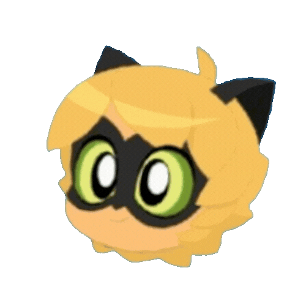

Advinhe o personagem de Miraculous!
| Personagem
Identificação do personagem
 |
Gênero Masculino, Feminino ou Outro | Alinhamento(s) Bom, Neutro, Mal | Formas Akumatizadas Número de vilões diferentes que o personagem já se tornou ao ser akumatizado | Poderes de Miraculous Usados Inclui uso direto (transformação) e indireto (akumatização ou transferência de poder via Alliance) | Primeira Aparição Primeira aparição na obra (episódio ou especial) |
|---|---|---|---|---|---|